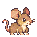
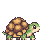
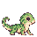

Mouse, turtle, lizard · 42 × 42
Unclothed concept stills. Each exported sprite is exactly 42 × 42 pixels.

Wood mouse · 6× inspection

Box turtle · 6× inspection

Woodland lizard · 6× inspection
Gameplay scale
One sprite pixel equals one world unit. Home is 128 × 128; terrain blocks are 32 × 32.
Open the live game preview
The built-in image generator supplied enlarged pixel-style source artwork. Exports are cropped, sampled to 42 pixels and mapped to the Buttonwood palette. This is a conversion experiment, pending visual approval; it is not evidence that the generator authored a perfect 42-pixel grid.